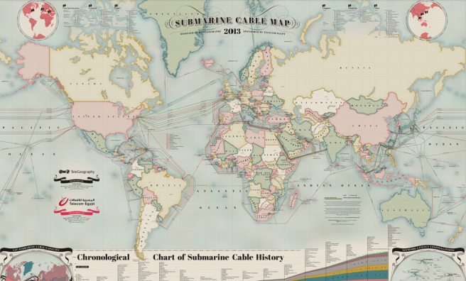
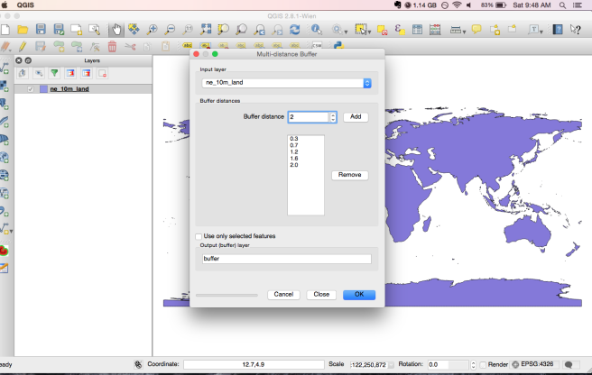
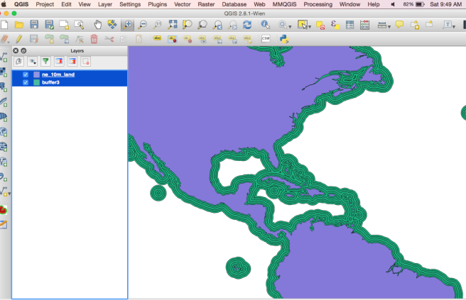
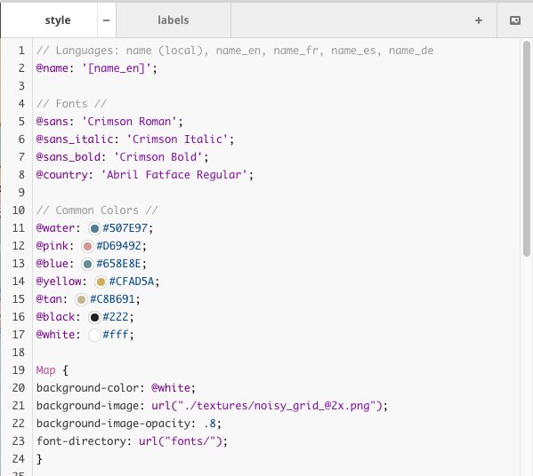
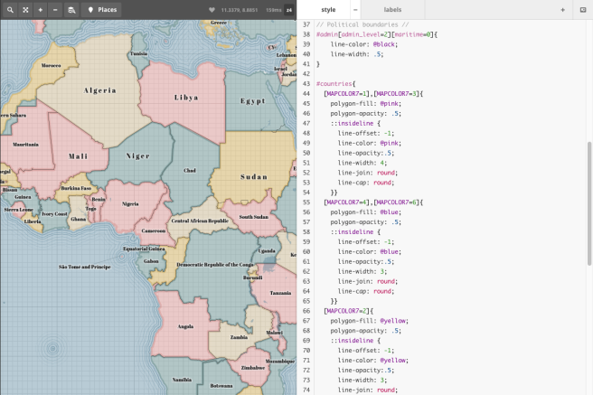
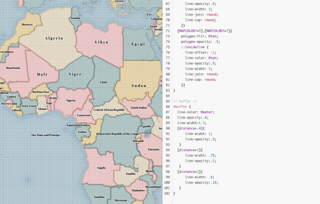

CartoCSS Part One
Under my research with Dr. Robert Roth, I’ve been researching CartoCSS for our Advanced Graphic Design in Cartography course. I’m obsessed with the amazing tile sets being created by designers at Mapbox, Stamen, and everyone else using CartoCSS in new and creative ways. Our goal is to have students learn CartoCSS and create a well designed tile set.
Right now I’m creating an example tile set where I’m taking a beautiful map made by Telegeography and converting it to a vector tile set. This is one of the options we’ll be having students do for their lab, where they choose a static map and recreate some of the elements of the map. My next tutorial will be on another of the options.
Step 1: Choose Map & Make Notes

This is the map I’m remaking in CartoCSS. I love the take on a classic political map, with the beautiful pastels with the intense waterlines and grid textures.
This part is pretty self explanatory, but gives me an opportunity to outline what are the essentials to making this map.
Step 2: Time for Mapbox Studio
Once I have the map idea all laid out, it’s time to open Mapbox Studio. This has easily become one of my favorite cartographic softwares. It’s easy to use, has documentation built in, and once you get how to upload sources and do layering, it’s a breeze.
I originally started with just using Mapbox Streets as my data source, but knew I’d need to add in some custom sources for some of the effects I wanted to make.
Step 3: Makin’ Waterlines
The most important custom data I knew I needed to add were my waterlines. It’s such a beautiful detail of the map that I knew I had to do it. I’m also obsessed over them, due to my love of J.R.R. Tolkien and old maps with that beautiful detail (As a side note, I recommend learning how to do this technique in Adobe Illustrator for static maps as they can really enhance a static map). I downloaded land shapefiles from Natural Earth Data and did some buffering in QGIS.
To do a multi-ring buffer in QGIS, I played around with a few tools. I first tried the built in buffer tool, but hated it. I needed to make multi-ring buffers and I didn’t want to have to create 10 buffers and then combine them back into one shapefile. Too time consuming. I then tried the MMGIS plugin, which is good, but not exactly what I needed. Finally, I actually just looked at the plugin list and saw there was a multi-ring buffer tool and it had been waiting for me all along.
As a word of caution, unless you’re RAM on your computer is amazing, make SURE you generalize your line work through mapshaper first. It’ll make buffering a lot faster.

Once you’ve loaded up your generalized land shapefile and have downloaded the ‘Multi-Ring Buffer Plugin’, you’re 60% done. Just type in the distances you want the buffers in, and then name the new shapefile and you’re done!

Step 3: Stylin’ Time:
The first thing I like to do in starting a CartoCSS tile set is set up my map{ } definitions. I have that really cool grid texture to add (which is housed inside my .tm2 source folder) that will give me the look and feel of an antique political map that I’m basing this style off of.
This map is also going to have some global color & font variables set so I don’t have to worry about the color every time. On line 2, the variable @name sets that the MapboxStreets Country name is from the OSM field ‘name_en’. My next section is setting the global fonts I want to use. I uploaded Abril Fatface Regular by adding a font directory a little farther down in the lines of code (line 23). When you choose ‘Fonts’ from the left toolbar after saving, any fonts you have saved in the .tm2 file will show up under ‘Your Fonts’ at the top.
I then set global colors because I like global variables since I’m so used to Javascript. Finally, I set the Map {} instructions to set the background color to be white (It helps with my colors being more vibrant and also I can easily see any problems with fills). I then import that awesome grid I found online, I recommend subtle patterns for nice, repeatable vector patterns. I then change the opacity so it’s not too overbearing.

Step 4: Let’s Get Political!
While I was working on my buffers, I also exported the Natural Earth Data’s country shapefile and imported it into Mapbox Studio. This shapefile has some great built in attribute data, which is important for us when wanting to make a political map color scheme easily. There are 3 MAPCOLOR columns meant for 7,9, or 13 color values. Since I have four colors to use for the political color scheme, I’ll have to double up on some the values in the attribute table.

As you can see above, I set different MAPCOLORS to be each of the colors. After I use the polygon-fill and set it to be a little transparent, I work on making the border lines that are really recognizable on this map. Double colons work in CartoCSS as a different symbolizer so I can do linework similar to the inspiration map. First I set a black political border for all borders that don’t go along an ocean (line 38). Then with each ::insideline definition in each of the map colors, I made it to have a thin political border with round joins & caps. Note that I used a negative offset to keep it inside the polygon and from interfering with other country borders.
Step 5: Adding in Waterlines
So far, we have that awesome texture, a nice political color scheme, and should add that cool waterline shapefile we have.

So that awesome multi-ring buffer tool I used? It made an attribute with the distances saved in the shapefile so I can just set different line widths and opacities with the different line widths.
← back to blog